Entrada y salida
Entrada y Salida
Localización Rápida del Vehículo
Cuando esté cerca del vehículo (por ejemplo, en un estacionamiento residencial), en la APP móvil, seleccione la interfaz “XPENG” o la interfaz “Ubicación del Vehículo/ Mapa”, y elija el aviso mediante bocina o destello para que pueda encontrar rápidamente el vehículo.
Introducción
Cuando no se puede encontrar el vehículo, esta función puede utilizarse para localizarlo.
Operación
• Solo el número de cuenta del propietario puede ver la ubicación en tiempo real del vehículo.
Consejos
Cuando esté lejos del vehículo o no sepa dónde está estacionado el vehículo, puede ir a la interfaz “XPENG” en su aplicación móvil para consultar la información de ubicación geográfica del vehículo.
Localización del vehículo a larga distancia
• Una conexión de red deficiente del vehículo puede provocar que la función de búsqueda del vehículo no funcione correctamente.
• Cuando el vehículo está bloqueado, el sistema captura automáticamente fotografías del perímetro del vehículo, y las anonimiza y encripta para proteger la privacidad del usuario.
Toque la información de ubicación para ver fotos de la zona que rodea al vehículo estacionado; toque la cámara para ver el video alrededor del vehículo; toque la navegación para generar una ruta que le permita localizar el vehículo.
Retroalimentación de Desbloqueo/Bloqueo
Introducción
Localización del vehículo a corta distancia
Utilice la interfaz de la App móvil para operar la localización del vehículo a corta distancia.
Cuando el vehículo se desbloquea, las puertas se desbloquean de forma sincronizada; las luces intermitentes a ambos lados del vehículo parpadearán dos veces; la bocina sonará
Entrada y Salida
o se reproducirá música de acordes (si está configurado); la manija de la puerta delantera se extenderá (si está configurado); los espejos laterales se abrirán (si está configurado); y el sistema de alarma antirrobo se desactivará.
• En la CID, vaya a la interfaz “ →Ventana y Puerta”, y podrá activar o desactivar la función “Manijas Emergentes al Desbloquear”.
Cuando el vehículo se bloquea, las puertas se bloquean de forma sincronizada; las luces intermitentes a ambos lados del vehículo parpadearán una vez; la bocina sonará o se reproducirá música de acordes (si está configurado); la manija de la puerta delantera se retraerá; los espejos laterales se plegarán (si está configurado); las ventanas se cerrarán (si está configurado); y el sistema de alarma antirrobo se activará.
Puede configurar el modo de apertura y cierre de los espejos laterales cuando el vehículo está bloqueado a través de la CID:
• En la CID, vaya a la interfaz “ →Conducción→Espejos Laterales Exteriores”, y podrá activar o desactivar “Plegar Espejos Laterales automáticamente después del bloqueo del vehículo”.
• En el panel de accesos directos, toque “Ajuste del Espejo Lateral”. En la interfaz “Espejo Lateral”, puede activar o desactivar “Plegar Espejos Laterales automáticamente después del bloqueo del vehículo”.
Puede configurar el método de retroalimentación para desbloquear o bloquear el vehículo a través de la pantalla de control central:
Operación
Puede configurar el modo de apertura y cierre de las ventanas cuando están bloqueadas a través de la CID:
• En la CID, vaya a la interfaz “ →Ventana y Puerta”, y podrá seleccionar los métodos para la retroalimentación de desbloqueo y bloqueo respectivamente: “Destello de Luces,” “Destello + Bocina”, y “Destello + Acorde”.
• En el CID, dirigite a la interfaz “ →Ventana y Puerta” y podés activar o desactivar “Cerrar Ventanas Automáticamente después de Bloquear el Vehículo”.
Podés configurar la forma de habilitar o deshabilitar las Manijas Emergentes al Desbloquear a través del CID:

Entrada y Salida
Sistema de Alarma Antirrobo*（si corresponde）
Llave de Tarjeta NFC
Cuando el sistema antirrobo está activado y se abre cualquier puerta (incluido el baúl) o el capó delantero, el sistema antirrobo emitirá una alarma a través de la bocina y las luces de giro. La alarma del sistema antirrobo puede desactivarse después de desbloquear el vehículo.
Introducción
La llave de tarjeta NFC permite desbloquear, bloquear y arrancar el vehículo.
Funcionamiento
La alarma del sistema antirrobo dura aproximadamente 28 segundos y se reinicia si las puertas (incluido el baúl) o la tapa del compartimento delantero se abren nuevamente.
Consejos
Está prohibido realizar modificaciones al sistema antirrobo del vehículo, ya que esto puede provocar que el sistema no funcione correctamente.
advertencia
1. Desbloqueo de puertas
• Cuando el vehículo esté bloqueado, acercá la Llave de Tarjeta de Comunicación de Campo Cercano al área del sensor NFC en el pilar B del lado del conductor durante aproximadamente un segundo. En
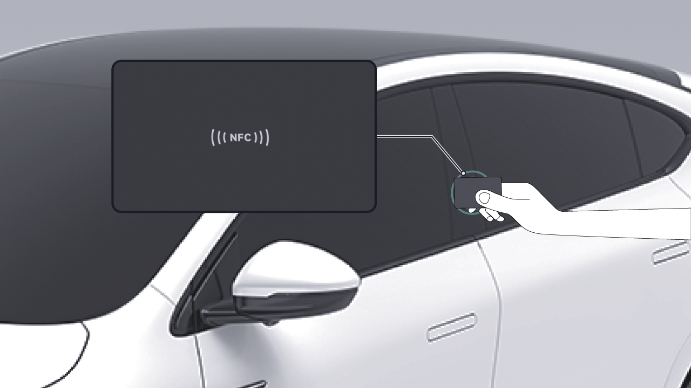
Entrada y Salida
ese momento, el vehículo proporcionará un aviso de retroalimentación de desbloqueo, indicando que el desbloqueo fue exitoso.
la Llave de Tarjeta de Comunicación en el área de carga inalámbrica del lado del conductor (marcada por la línea punteada) para volver a autenticar. Una vez que se detecta el llavero de la tarjeta, el temporizador de autenticación de 30 segundos se reiniciará. Una vez que la autenticación sea exitosa, podés arrancar el vehículo presionando el pedal de freno y cambiando de marcha.
- Bloqueo al alejarse
• Cuando el vehículo esté desbloqueado y todas las puertas (incluidos el capó delantero y el baúl) estén cerradas, acercá la Llave de Tarjeta de Comunicación de Campo Cercano al área de detección NFC en el pilar B del lado del conductor durante aproximadamente un segundo. En ese momento, el vehículo proporcionará un aviso de retroalimentación de bloqueo, indicando que el bloqueo fue exitoso.
- Arrancar el vehículo
• Dentro de los 30 segundos de usar la Llave de Tarjeta de Comunicación de Campo Cercano, podés presionar el pedal de freno y cambiar de marcha para arrancar el vehículo.
• No dobles, tuerzas ni cortes la llave de tarjeta NFC;
Consejos
• Si el vehículo no puede arrancarse dentro de los 30 s, la pantalla de control central mostrará un aviso emergente que indica “"Llave no detectada"”. Por favor, colocá la Llave de Comunicación de Campo Cercano
• No coloques la llave de tarjeta NFC en un lugar caliente (por ejemplo, la consola de instrumentos);
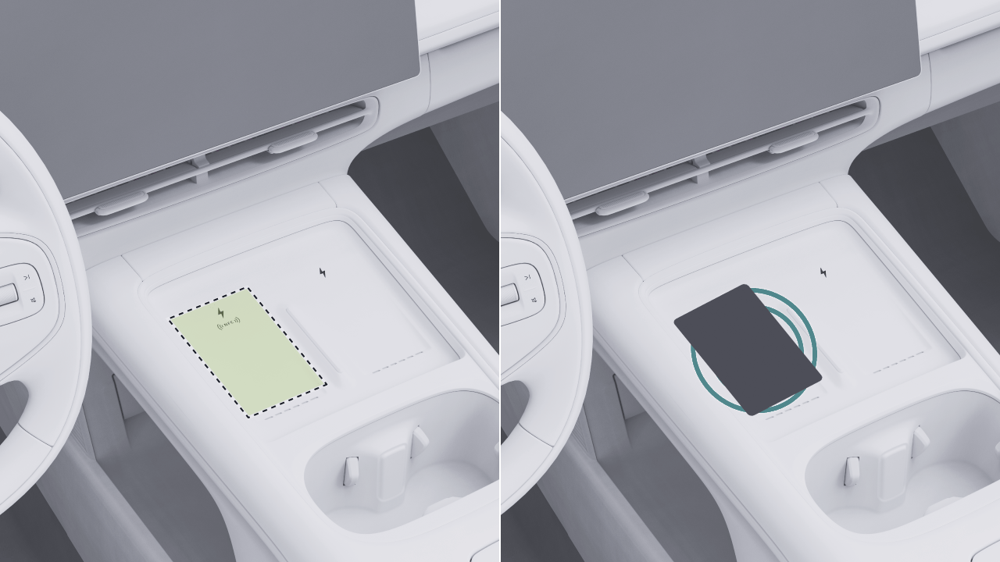
Entrada y Salida
• No coloques teléfonos móviles u otros objetos metálicos en el área de carga inalámbrica de tu teléfono cuando arranques el vehículo usando la llave de tarjeta NFC;
Funcionamiento
• No coloques la llave de tarjeta NFC en el área de detección de carga inalámbrica cuando uses la función de carga inalámbrica del teléfono móvil.
Llave Remota Inteligente
Introducción
El vehículo está equipado con una llave remota inteligente, que admite tanto la operación con botones como el Desbloqueo o Bloqueo Automático
1. Botón de bloqueo
Presione brevemente este botón y el vehículo mostrará un aviso de confirmación de bloqueo, indicando que el bloqueo se realizó correctamente.
Consejos
• El vehículo no se bloqueará a menos que esté en posición P y todas las puertas (incluida la tapa del compartimento delantero y el maletero)
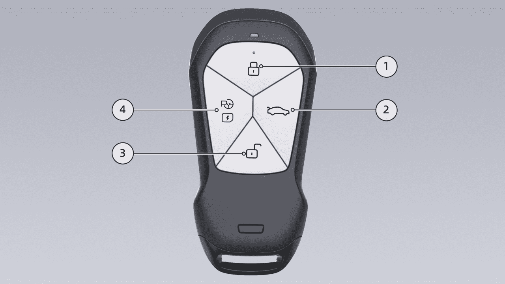
Entrada y salida
estén cerradas, salvo que el vehículo se deje sin supervisión.
Reemplazo de la batería de la llave de control remoto inteligente
- Botón de apertura/cierre del maletero
Haga doble clic en este botón para abrir o cerrar el maletero. Pause la apertura o el cierre del maletero.
- Botón de desbloqueo
Presione este botón y el vehículo mostrará un aviso de confirmación de desbloqueo, indicando que el desbloqueo se realizó correctamente.
- Botón de estacionamiento y apertura/cierre de la tapa del puerto de carga
• Toque dos veces este botón para abrir o cerrar la tapa del puerto de carga.
1. Presione el botón de desbloqueo de la cubierta embellecedora y retire la cubierta embellecedora en la dirección de la flecha.
• Asiste con el uso de las funciones relacionadas con el estacionamiento.
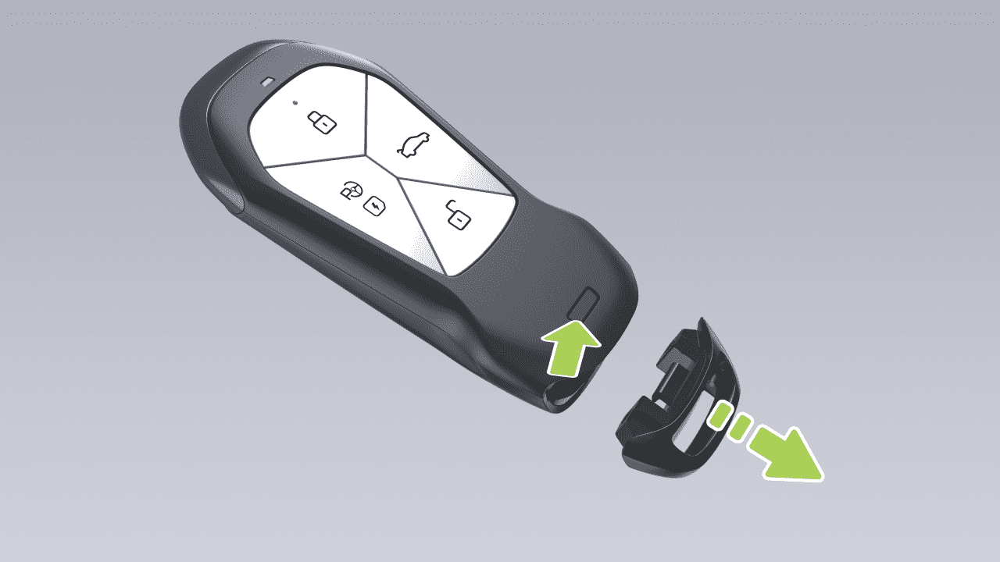
Entrada y salida
-
Haga palanca en los bordes de ambos lados de la cubierta trasera con una herramienta adecuada, luego levante y retire la parte central de la cubierta trasera.
-
Gire la placa de la cubierta de la batería de la llave en sentido antihorario siguiendo la dirección de la flecha y retire la placa de la cubierta de la batería de la llave.
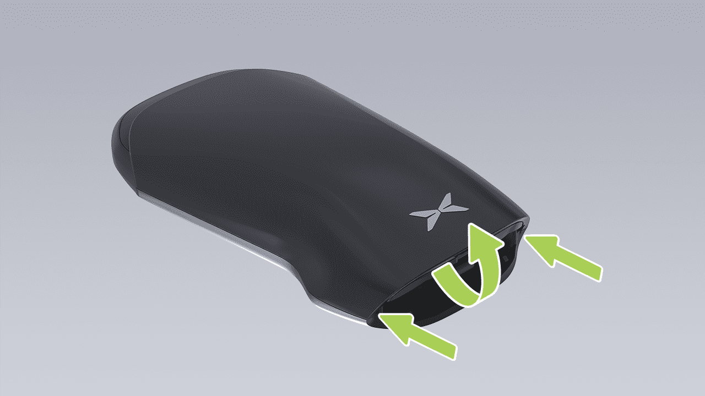
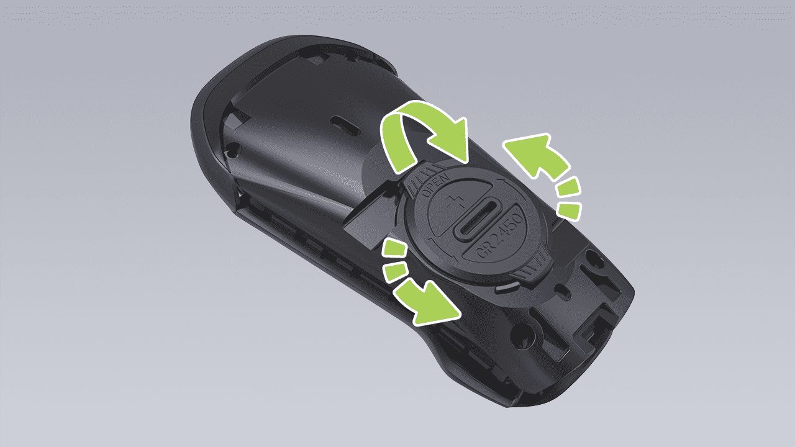
Entrada y salida
Advertencias, precauciones y limitaciones
advertencia
LA LLAVE DEL VEHÍCULO CONTIENE UNA PILA DE BOTÓN
Las pilas de botón de las llaves del automóvil son extremadamente peligrosas. Independientemente de si son nuevas o usadas, siempre deben mantenerse fuera del alcance de los niños. Si se ingieren o se introducen en el cuerpo, las pilas de botón de litio pueden causar lesiones graves o incluso mortales en dos horas o menos. Si sospecha que se ha ingerido o introducido en el cuerpo una pila, busque atención médica de inmediato.
-
Extraiga la batería de la llave. Modelo de batería: CR2450.
-
Instálela en el orden inverso. Durante la instalación, mantenga el “+” (polo positivo) de la batería de la llave hacia arriba.
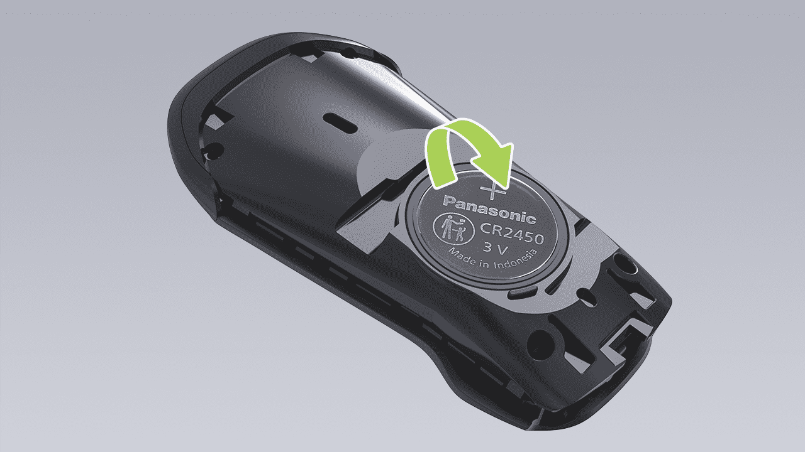
Entrada y salida
Llave de la aplicación móvil
Dispositivos compatibles: teléfonos con Android que admiten NFC.
Introducción
Consejos
Después de instalar la aplicación XPENG, puede registrar teléfonos móviles como llaves del vehículo y utilizar las tecnologías Bluetooth y NFC para la comunicación. Esto permite bloquear/ desbloquear, arrancar el vehículo y controles adicionales de forma cómoda y segura.
Una vez activada la llave, la aplicación predeterminada de NFC debe configurarse como “XPENG Automobile app” antes de poder usarla.
En la aplicación XPENG, vaya a “Llave digital”, toque “Activar” bajo Llave Bluetooth y opere según las indicaciones de la aplicación XPENG para crear una llave Bluetooth móvil.
Llave Bluetooth móvil
La aplicación XPENG admite los siguientes tres tipos de llaves:
• Llave Bluetooth móvil
Dispositivos aplicables: teléfonos iOS, Harmony y Android.
Llave Bluetooth: admite dos modos para las operaciones de bloqueo y desbloqueo.
Bloqueo o desbloqueo con llave Bluetooth
After turning on the key, change the different... — traduzco conservando el formato:
Tras encender la llave, cambiar el sistema, iniciar sesión con un teléfono diferente o desinstalar la aplicación: todo puede sincronizar automáticamente la llave, sin necesidad de volver a encenderla.
Consejos
• Desbloqueo y bloqueo manual: Una vez que el teléfono móvil se haya emparejado correctamente con el vehículo mediante Bluetooth, podés usar la App XPENG para desbloquear, abrir o cerrar las ventanillas, abrir el baúl, etc.
• Llave NFC móvil
Entrada y salida
• Desbloqueo y bloqueo automático: En la APP XPENG, activá el interruptor de “Desbloqueo y bloqueo automático”. Una vez que el teléfono móvil se haya emparejado correctamente con el Bluetooth del vehículo, podés desbloquear automáticamente el vehículo al acercar tu teléfono móvil al vehículo. El vehículo se bloqueará automáticamente cuando te alejes del vehículo llevando la llave.
Teléfono con sistema iOS
1. La información de ubicación debe configurarse en permitir siempre
-
Actualización de apps en segundo plano
-
Servicios de ubicación (Configuración > Privacidad > Servicios de ubicación)
Llave NFC del teléfono móvil
precaución
En la App XPENG, andá a “Llave digital”, tocá “Activar” debajo de la llave NFC y operá según las indicaciones de la App XPENG para crear una llave NFC móvil.
Después de desbloquear, no cierres la App Xpeng. Mantené la App de Xiaopeng Motors ejecutándose en segundo plano. Determiná la posición del dispositivo respecto al vehículo y desbloquealo desde el dispositivo. Para garantizar el funcionamiento normal, asegurate de habilitar los siguientes permisos para la App de Xiaopeng Motors:
Esta función solo es aplicable a teléfonos móviles con sistema operativo Android 9.0 o superior y hardware NFC.
Consejos
Teléfonos Android
1. Permiso de Bluetooth
-
Permiso de inicio automático
-
Permisos de funcionamiento en segundo plano
Entrada y salida
Desbloqueo o arranque del vehículo con la llave NFC
Consejos
• Al desbloquear con una llave XPENG Auto, la app de pago predeterminada de XPENG Auto debe configurarse como la app de XPENG Auto; de lo contrario, el NFC no funcionará correctamente.
• Al desbloquear/arrancar el vehículo con la llave NFC, será necesario que la pantalla del teléfono esté desbloqueada. El teléfono puede estar apagado o la pantalla puede no funcionar correctamente, lo que puede impedir el uso de la llave NFC.
• Mantené la parte trasera de tu teléfono lo más cerca posible del área de detección NFC, según la parte trasera de tu teléfono.
El procedimiento para desbloquear, bloquear y arrancar con la llave NFC del teléfono móvil es idéntico al de una tarjeta NFC. Una vez que hayas abierto la App XPENG, simplemente colocá tu teléfono móvil cerca del área de reconocimiento NFC en el pilar B para desbloquear o bloquear tu vehículo. Tras la verificación, cuando coloques tu teléfono cerca del área NFC del interior del vehículo, podés presionar el pedal del freno y cambiar de marcha para arrancar el vehículo.
Desactivación de la llave digital
En el CID, andá a la interfaz “ →General→Seguridad y privacidad”, tocá “Desactivar llaves digitales del vehículo”. En la ventana emergente, tocá “Confirmar para enviar” para enviar un código de verificación al número de teléfono del propietario del vehículo. Después de que el conductor ingrese y verifique el código, se desactivarán las llaves digitales del vehículo de todos los usuarios.

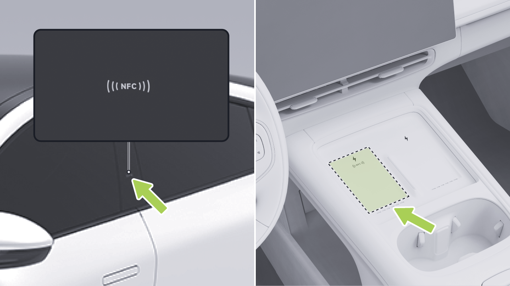
Entrada y salida
Consejos
• Después de reiniciar el teléfono o actualizar el sistema, si la App XPENG no se ha vuelto a abrir.
Cuando la llave digital se da de baja, todos los usuarios autorizados deben reactivar la llave digital y se debe usar con precaución.
• Cuando la puerta del vehículo, el capó delantero o el maletero no están completamente cerrados y se pierde la conexión Bluetooth al alejarse del vehículo.
Advertencias, precauciones y limitaciones
- ¿En qué combinaciones (incluidas, entre otras) la llave NFC del teléfono móvil no logra bloquear o desbloquear?
1. ¿En qué combinaciones (incluidas, entre otras) podría fallar la función de bloqueo/ desbloqueo automático de la llave Bluetooth?
• Cuando el teléfono tiene poca batería o está en modo de ahorro de energía.
• Cuando el teléfono tiene poca batería o está en modo de ahorro de energía.
• La función Bluetooth del teléfono móvil está desactivada.
• La función NFC del teléfono móvil está desactivada.
• Cuando el sistema del teléfono ha cerrado la App XPENG.
• La aplicación de pago predeterminada del teléfono no está configurada como la App XPENG.
Consejos
• Cuando la señal Bluetooth es inestable o se desconecta de forma anómala.
Cuando la llave Bluetooth del teléfono móvil no logre desbloquear, reinicie primero la App XPENG Auto. Si el problema aún no se resuelve, utilice la pantalla “XPENG→Llave digital→ comprobación
Entrada y salida
de llave”, siga las indicaciones para resolver el problema de conexión.
Funcionamiento
Entrada sin llave
Interruptor capacitivo de la manija de la puerta
Introducción
La entrada sin llave admite los siguientes métodos para bloquear y desbloquear:
• Interruptor capacitivo de la manija de la puerta.
• Bloqueo y desbloqueo automáticos.
Con la llave inteligente a distancia o la llave Bluetooth del móvil, puede tocar el interruptor capacitivo de la manija de la puerta delantera para desbloquear o bloquear el vehículo.
• Desbloquear la puerta: Cuando el vehículo está bloqueado, toque el interruptor capacitivo de la manija de la puerta delantera. En ese momento, el vehículo mostrará un aviso de confirmación de desbloqueo, indicando que el desbloqueo se ha realizado correctamente.
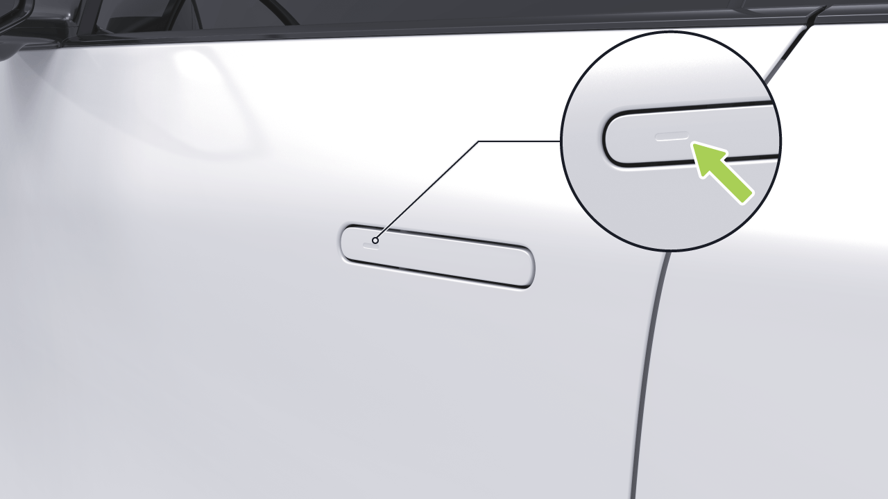
Entrada y salida
• Bloqueo al alejarse: Cuando el vehículo está desbloqueado y todas las puertas (incluidos el capó delantero y el maletero) están cerradas, al tocar el interruptor capacitivo de la manija de la puerta delantera se activará un aviso de confirmación de bloqueo, indicando que el bloqueo se ha realizado correctamente.
desbloquea automáticamente las puertas, y al alejarse las bloquea automáticamente.
• “Desbloqueo automático:” Después de activar "Bloqueo/Desbloqueo automático", acerque la llave a distancia* a una posición de aproxi- madamente 3,5 metros del vehículo, y el vehículo se desbloqueará automáticamente.
Desbloqueo automático*
Después de que el vehículo se bloquee automáticamente, si todavía está dentro del rango de detección, es posible que no pueda desbloquear el vehículo cuando se acerque nuevamente. En ese caso, puede tirar de la manija de la puerta o usar la llave para desbloquearlo manualmente.
Consejos
• "Bloqueo automático:" Bloqueo automático: Después de activar "Bloqueo/Desbloqueo automático", tome la llave remota* y aléjese hasta una posición de aproximadamente 8 metros del vehículo, y el vehículo se bloqueará automáticamente.
En la CID, vaya a la interfaz " →Ventana y Puerta", seleccione "Bloqueo/Desbloqueo automático"; cuando todas las puertas estén cerradas y el asiento del conductor esté desocupado, al acercarse con la llave remota se

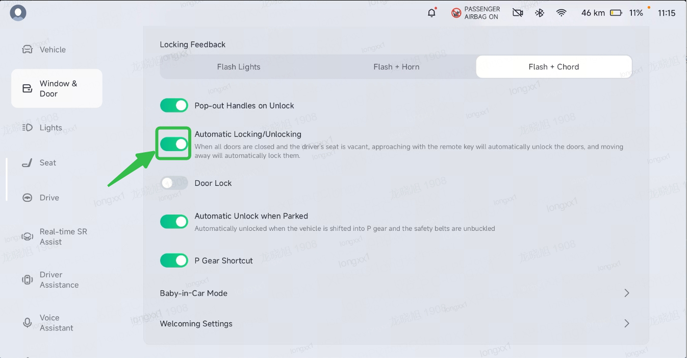
Entrada y Salida
Consejos
-
Detrás de la luz de lectura delantera
-
Ambos lados del paragolpes trasero
Con el vehículo detenido, las puertas (incluido el baúl) y el capó cerrados, el vehículo en posición de Estacionamiento (P) y sin nadie en el asiento del conductor, las puertas se bloquearán automáticamente solo cuando se retire la llave del vehículo. Asegúrese de que el vehículo esté bloqueado antes de salir.
Los pasajeros con marcapasos cardíacos implantados deben mantener una distancia de al menos 22 centímetros de la antena Bluetooth del vehículo para evitar que la antena Bluetooth interfiera con el funcionamiento del marcapasos cardíaco.
Advertencias, Precauciones y Limitaciones
Desbloqueo y Bloqueo Interior
Posición de la antena Bluetooth
Introducción
Puede bloquear o desbloquear el vehículo desde el interior del vehículo utilizando los siguientes métodos:
• Cerradura de la puerta del vehículo
• Cerradura de la puerta del vehículo desde la pantalla de control central
• Desbloqueo automático al estacionar
1. Ambos lados del paragolpes delantero
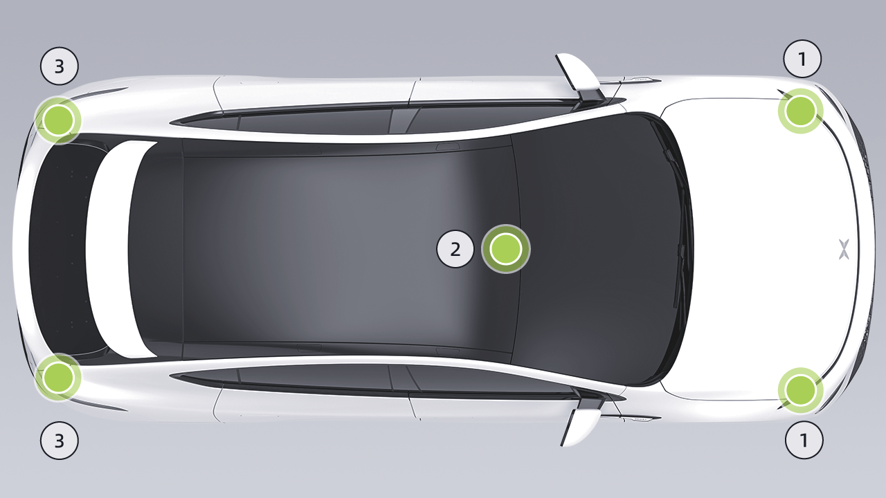
Entrada y Salida
Operación
Cerradura de la puerta del vehículo desde la CID
Cerradura de la puerta del vehículo
• En la CID, vaya a la interfaz " →Ventana y Puerta", y podrá activar o desactivar "Cerradura de Puerta".
El interruptor de la cerradura de la puerta se encuentra en el apoyabrazos de la puerta del conductor:
• Bloquear: Cuando todas las puertas (y el capó delantero y la tapa del baúl) estén cerrados, presione este interruptor para bloquear el vehículo.
• En la barra de tareas inferior de la CID, toque "Cerradura de Puerta" (si está configurado), y podrá bloquear o desbloquear el vehículo.
• Desbloquear: Presione este interruptor para desbloquear el vehículo.

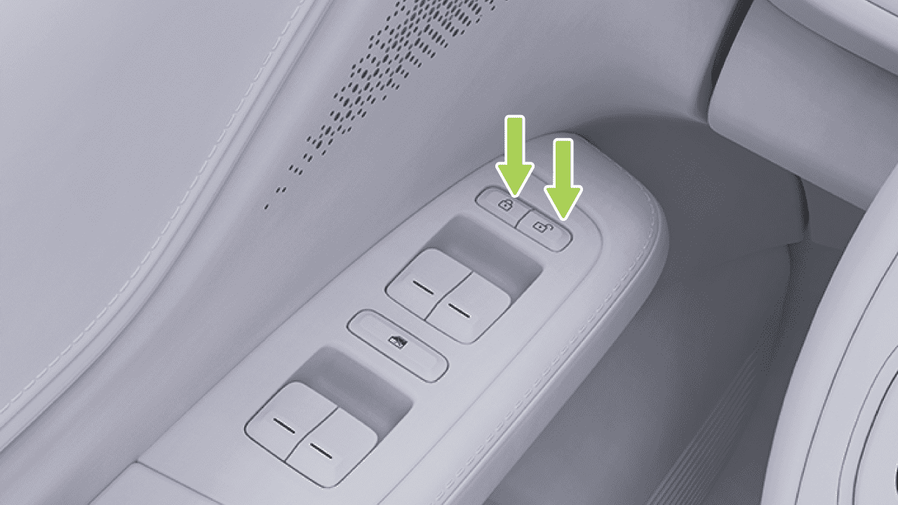
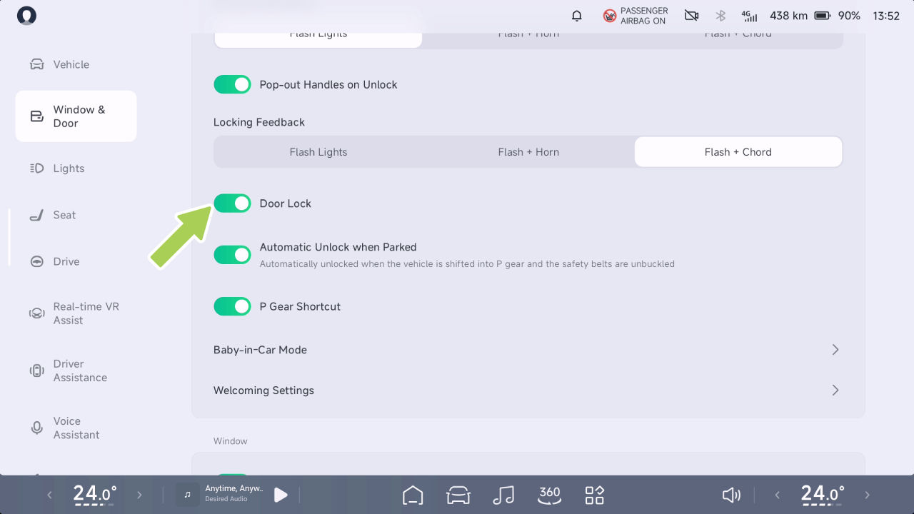
Entrada y Salida
Desbloqueo automático al estacionar
• En la CID, toque " ", y luego toque "Asistencia RV en Tiempo Real" en el Centro de Aplicaciones o "Asistencia de Realidad Virtual en Tiempo Real" (si está configurado) en la barra de tareas de la parte inferior de la CID para acceder a la interfaz de Asistencia de Realidad Virtual en Tiempo Real. En la interfaz, toque el ícono debajo del modelo 3D del vehículo para desbloquear o bloquear el vehículo.
En la CID, vaya a la interfaz " →Ventana y Puerta", y podrá activar o desactivar "Desbloqueo automático al Estacionar el Vehículo".
Cuando "Desbloqueo automático al Estacionar el Vehículo" está habilitado, las puertas se desbloquean automáticamente después de que el vehículo cambie a posición P y se desabroche el cinturón de seguridad del conductor.


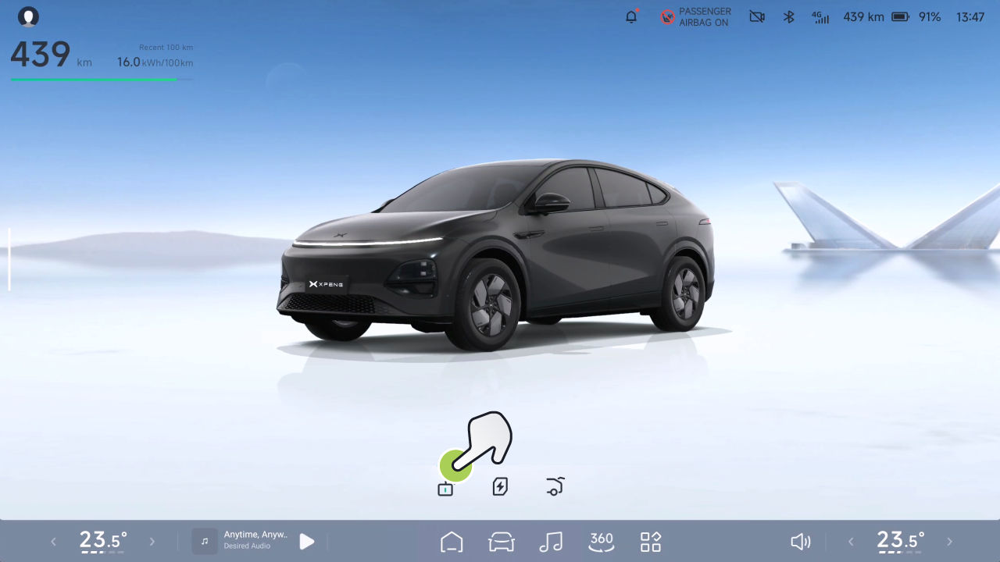
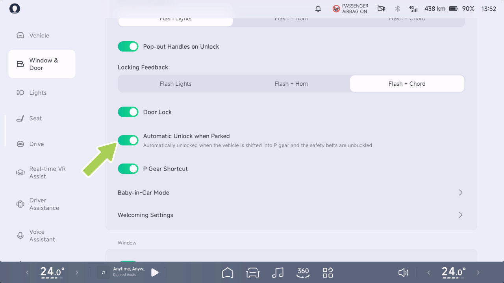
Entrada y Salida
Consejos
• Desbloquee el vehículo mediante el interruptor capacitivo de la manija de la puerta delantera.
Las cerraduras de las puertas también se abren/cierran automáticamente si se cumplen ciertas condiciones:
• Configurar Manijas emergentes al desbloquear.
• Bloqueo automático en marcha: Cuando las puertas (incluido el maletero) y la cubierta del compartimento delantero están cerradas, las cerraduras de las puertas se bloquean automáticamente si la velocidad del vehículo es superior a 10 km/h.
• Despliegue la manija de la puerta manualmente.
Funcionamiento
Configurar Manijas emergentes al desbloquear
• Desbloqueo automático al estacionar: La puerta se abre desde el interior del vehículo (botón eléctrico de apertura de puerta delantera/apertura de emergencia) y la cerradura de la puerta se desbloquea automáticamente.
• Desbloqueo automático de emergencia: La puerta se desbloquea automáticamente cuando el vehículo sufre una colisión o se produce una emergencia, como una fuga térmica.
Manijas eléctricas de puerta ocultas
En la CID, vaya a la interfaz « →Ventana y puerta» y active «Manijas emergentes al desbloquear». Cuando el vehículo se desbloquea, la manija de la puerta
Introducción
El vehículo cuenta con manijas eléctricas de puerta ocultas, que se pueden operar de la siguiente manera:

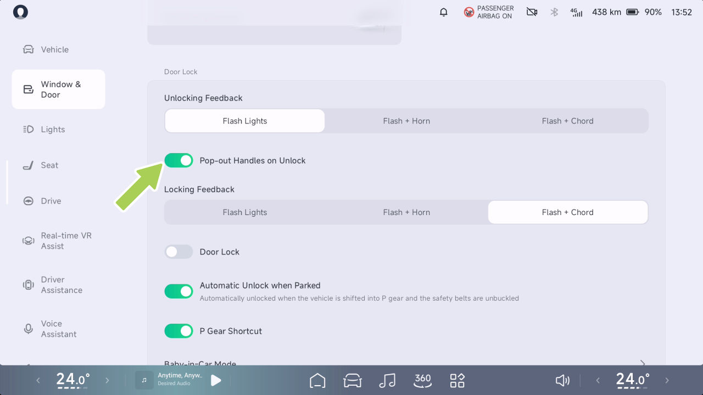
Entrada y salida
se desplegará automáticamente, de modo que pueda tirar de la manija para abrir la puerta fácilmente.
Retracción automática de la manija de la puerta
• Retracción por bloqueo: Cuando la puerta está bloqueada, la manija de la puerta se retraerá automáticamente.
Desplegar la manija de la puerta manualmente
• Retracción al cambiar de marcha: Cuando la palanca de cambios pasa de P a N/R/D, la manija de la puerta se retraerá automáticamente.
• Retracción por exceso de velocidad: Cuando la velocidad del vehículo supera los 3 km/h, la manija de la puerta se retraerá automáticamente.
• Retracción por tiempo de espera: Si las puertas (incluido el maletero) y el capó delantero están cerrados y no se realiza la operación de retracción en un plazo de 120 segundos, la manija de la puerta se retraerá automáticamente.
En la CID, vaya a la interfaz « →Ventana y puerta» y desactive «Manijas emergentes al desbloquear». Cuando el vehículo se desbloquea, la manija de la puerta no se desplegará automáticamente. En este caso, debe presionar el extremo delantero de la manija de la puerta y tirar de ella para abrir la puerta.
advertencia
Al usar las manijas de las puertas, tenga cuidado de que los dedos, joyas, uñas acrílicas, etc., no queden atrapados por la puerta o el mecanismo de la manija. De lo contrario, podría provocar daños a objetos o lesiones personales.

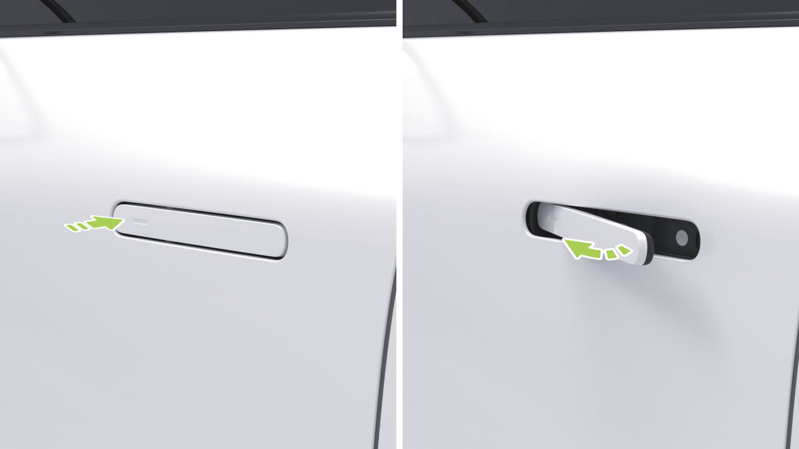
Entrada y salida
Consejos
Funcionamiento
• Al usar la función de estacionamiento automático, la manija de la puerta enrasada permanece desplegada; tirar de la manija de la puerta suspende la función de estacionamiento automático.
A través de las manijas eléctricas de puerta ocultas
• Controlar el plegado/despliegue de la manija de la puerta más de 8 veces en 1 minuto activará el modo antijuego, la manija de la puerta dejará de moverse y, después de 20 segundos, la función se reanudará.
Apertura/cierre de las puertas eléctricas
Introducción
La puerta eléctrica se puede abrir o cerrar de las siguientes maneras:
Cuando el vehículo está desbloqueado, la puerta se puede abrir usando la manija eléctrica de puerta oculta.
• Manijas de puerta eléctricas ocultas
• Botón eléctrico de apertura de puerta
• Llave mecánica
• Manija de apertura de emergencia o anilla de tracción
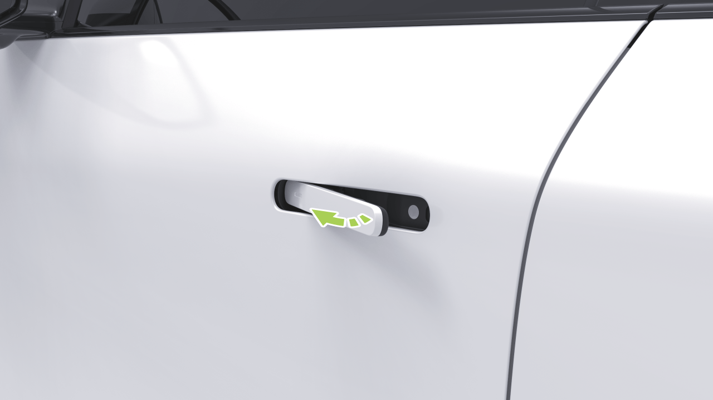
Entrada y salida
Botón eléctrico de apertura de puerta
Manija delantera de apertura de emergencia de la puerta
Con el vehículo detenido, presione el botón eléctrico de apertura de puerta para abrir la puerta.
Tire de la manija de apertura de emergencia situada debajo del apoyabrazos de la puerta delantera para abrir la puerta.
Consejos
advertencia
Cuando la velocidad del vehículo es superior a 3 km/h, la puerta no puede abrirse mediante el botón eléctrico de apertura de puerta.
Con el vehículo detenido o en marcha, al tirar de la manija de apertura de emergencia una vez se abre la puerta; no es para uso no urgente, no tire de la manija de apertura de emergencia mientras conduce.
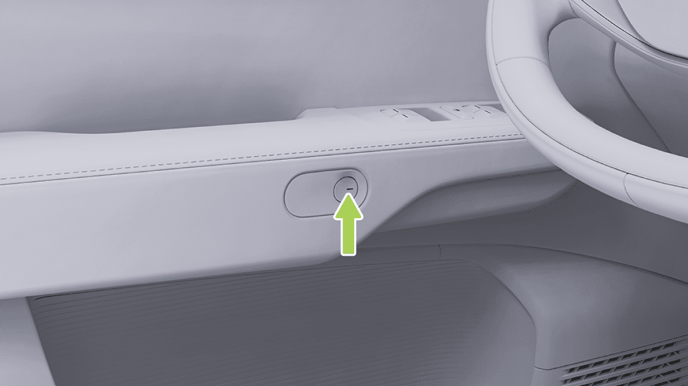
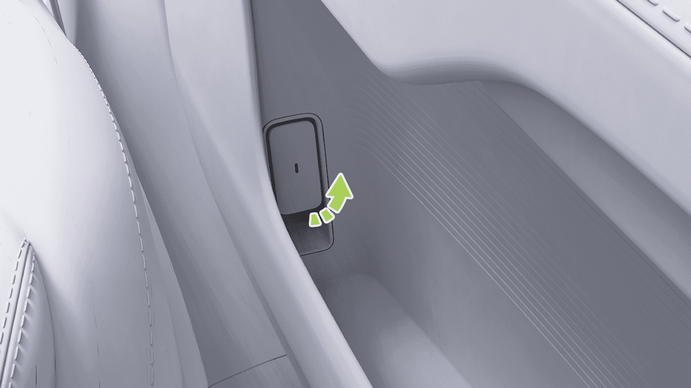
Entrada y salida
Anilla trasera de apertura de emergencia de la puerta
Llave mecánica
1. Presione para abrir la placa de la cubierta de mantenimiento situada debajo del apoyabrazos de la puerta trasera.
Cuando el vehículo no tiene energía, presione el extremo delantero de la manija de puerta oculta y tírela hacia afuera. Inserte la llave mecánica en el orificio de la cerradura, gírela en sentido horario para desbloquear la puerta y luego tire de la manija de la puerta para abrirla.
- Tire de la anilla de apertura de emergencia de la puerta para abrirla.
advertencia
Con el vehículo detenido o en marcha, al tirar de la lengüeta de apertura de emergencia una vez se abre la puerta; no es para uso no urgente, no tire de la lengüeta de apertura de emergencia mientras conduce.
• Solo la puerta principal puede abrirse mediante la llave mecánica; al ingresar al vehículo, las demás puertas pueden abrirse mediante la manija/anilla de apertura de emergencia.
Consejos

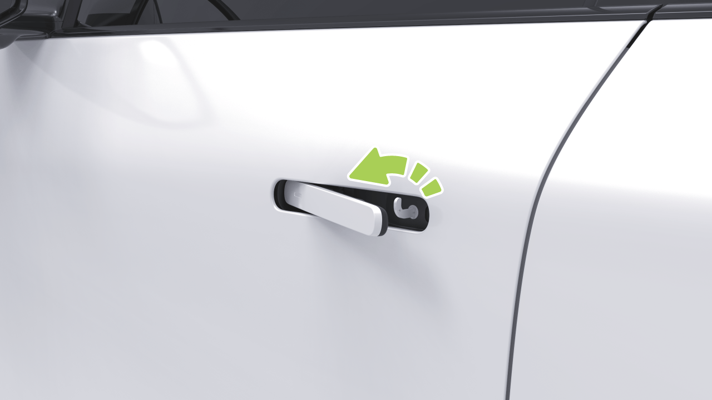
Entrada y salida
• Asegúrese de que la llave mecánica esté completamente insertada antes de girarla. Al desbloquear, la llave mecánica debe girarse de nuevo a la posición inicial para poder retirarla. Si la llave no gira durante la operación, insértela completamente para continuar girándola.
• Voz Xpeng
• Llave de la aplicación móvil
• Tecla de acceso rápido del volante (si está configurada)
• Pantalla de control central
– Panel de accesos rápidos
• En climas de frío extremo, no fuerce la salida de la llave si esta no regresa al usar la puerta con la llave mecánica. Comuníquese con el Centro de Servicio Automotriz Xpeng.
– Barra de tareas inferior (si está configurada)
• Interruptor de apertura de emergencia
– Interfaz de configuración
• La llave mecánica se suministra por separado con el vehículo, así que guárdela en un lugar seguro para evitar perderla.
Consejos
Al abrir/cerrar el compartimento de carga, este se retraerá una cierta distancia si encuentra una obstrucción.
Apertura o cierre del baúl
Introducción
Al abrir/cerrar el baúl, asegúrese de que no haya personas ni otras obstrucciones dentro del área de apertura/cierre del baúl para evitar lesiones personales o daños al vehículo.
advertencia
El baúl puede abrirse o cerrarse de las siguientes maneras:
• Interruptor exterior del baúl
• Interruptor interior del baúl
• Llave inteligente a distancia
Entrada y salida
Operación
Interruptor interior del baúl
Interruptor exterior del baúl
Presione el interruptor interior para cerrar el baúl, o pausar la apertura o el cierre del baúl.
Con las puertas desbloqueadas, puede presionar el interruptor exterior del baúl para abrir o cerrar el baúl, o pausar el baúl que se está abriendo/cerrando.
Si el vehículo está bloqueado, mientras lleve la llave cerca del baúl, podrá abrir el baúl.
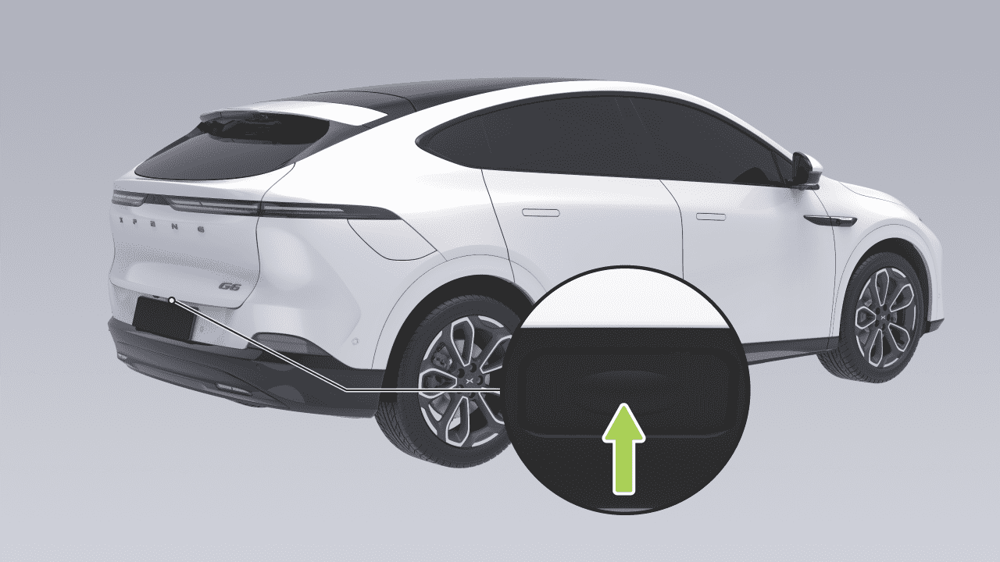
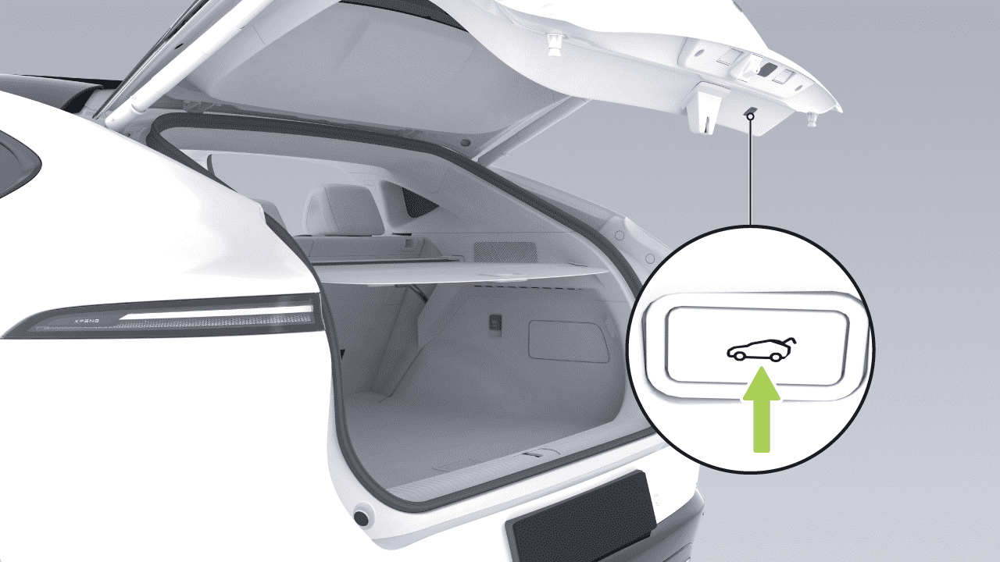
Entrada y salida
la pantalla de control central puede abrir o cerrar el baúl.
En la CID, toque " " y luego toque "Asistencia VR en tiempo real" en el Centro de Aplicaciones o toque "Asistencia VR en tiempo real" en la barra de tareas inferior de la CID (si está configurada) para acceder a la interfaz de Asistencia de Realidad Virtual en Tiempo Real. En la interfaz, toque el icono debajo del modelo 3D para abrir o cerrar el baúl, o gire el modelo 3D para mostrar un icono de punto de acceso en el área del baúl, y toque el icono del punto de acceso para abrir o cerrar el baúl.
En la CID, vaya a la interfaz " →Ventanilla y puerta" para abrir/cerrar "el Baúl". Tocar de nuevo durante el movimiento pausará la apertura/cierre.
En la barra de tareas en la parte inferior de la CID, toque "Baúl" (si está configurado), y podrá abrir o cerrar el baúl.
Interruptor de apertura de emergencia
Si el baúl no se puede abrir, se puede abrir mediante las siguientes operaciones:


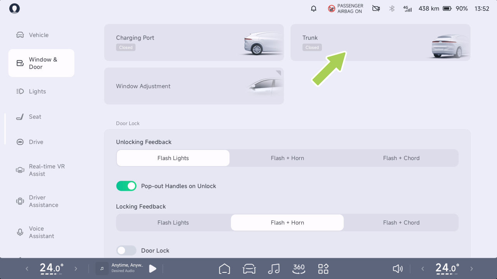
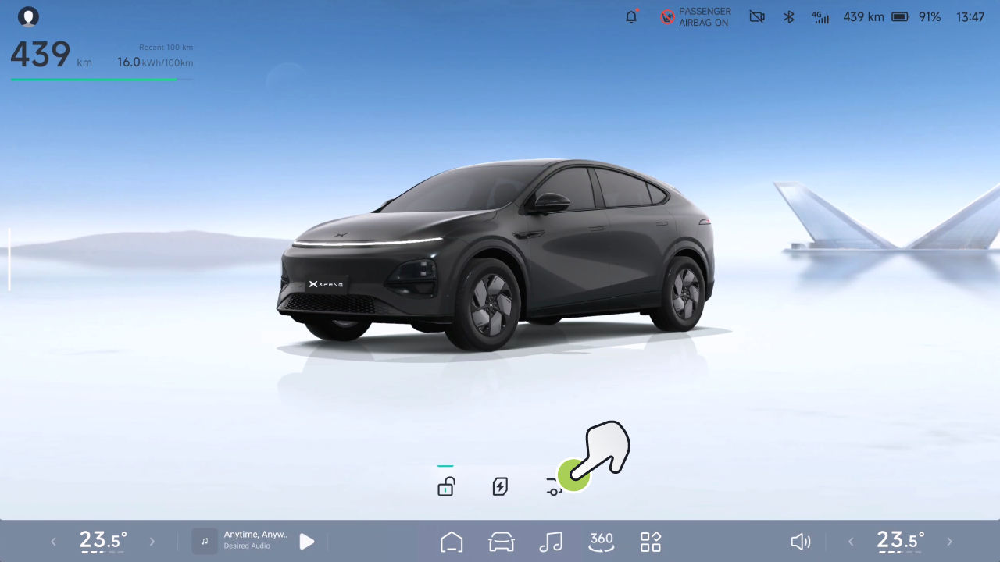
Entrada y salida
1. Baje el respaldo del asiento trasero e ingrese al baúl.
-
Tire de la palanca ① hacia la izquierda y manténgala, luego presione la palanca ② para desbloquear el baúl, y luego empuje el baúl hacia afuera para abrirlo en caso de emergencia.
-
Presione el pestillo superior de la cubierta embellecedora del dispositivo de desbloqueo de emergencia para retirar la cubierta embellecedora.
Consejos
Después de la apertura de emergencia, presione hacia abajo el baúl para cerrarlo.
Ajuste del ángulo de despliegue del baúl
El vehículo admite dos métodos (pantalla de control central e interruptor interior del baúl) para ajustar el ángulo de apertura del baúl:
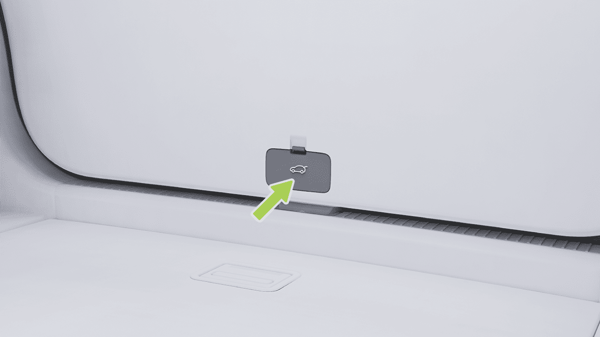
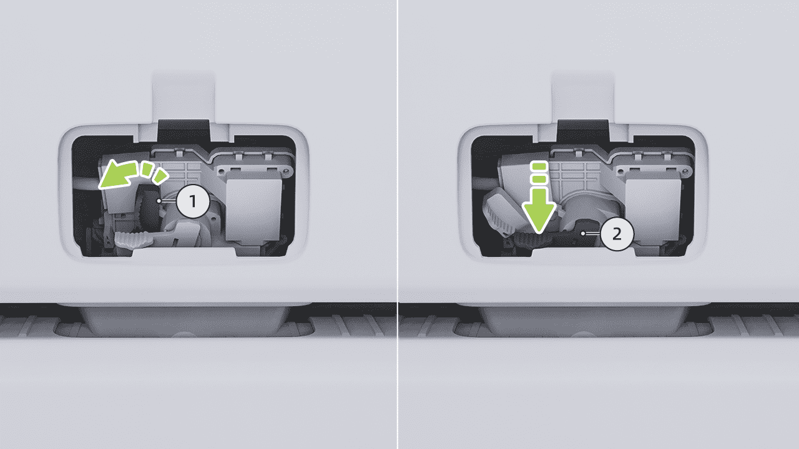
Entrada y salida
• En la CID, vaya a la interfaz " →Ventanilla y puerta", y podrá ajustar la "Memoria del ángulo de despliegue del baúl".
puede activar o desactivar las siguientes diferentes funciones de bienvenida.
• Cuando el baúl esté desplegado en el ángulo deseado, mantenga presionado el interruptor inferior del baúl hasta que vea un aviso intermitente. En este momento, se completa la configuración del ángulo de despliegue del baúl.
• Bienvenida del asiento del conductor
• Bienvenida del pasajero delantero
• Bienvenida de luces
Operación
• Efecto de sonido de bienvenida
Consejos
Bienvenida del asiento del conductor
Cuando se mantiene presionado el interruptor, el ángulo de despliegue del compartimiento de carga se ajustará al valor más bajo si el ángulo de despliegue del compartimiento de carga está por debajo de la configuración mínima permitida.
Cuando la función de bienvenida del asiento del conductor está habilitada, el asiento se desliza automáticamente hacia atrás a medida que se abre la puerta del conductor, facilitando su entrada y salida del vehículo. Al ingresar y cerrar la puerta de nuevo, el asiento regresa a la posición memorizada.
Modo de bienvenida
En la pantalla de control central, ve a la interfaz “ →Ventana y Puerta→Configuración de Bienvenida”, y podrás activar o desactivar la función de bienvenida del conductor.
Introducción
En la CID, ve a la interfaz “ →Ventana y Puerta→Configuración de Bienvenida”, y podrás

Entrada y Salida
Bienvenida del pasajero delantero
precaución
Con la función de bienvenida del asiento del pasajero delantero activada, al abrir la puerta del pasajero delantero el asiento se deslizará ligeramente hacia atrás, facilitando la entrada y salida. Al entrar al vehículo y cerrar nuevamente la puerta, el asiento vuelve a su posición guardada.
Asegúrate siempre de que no haya obstrucciones dentro del área de movimiento del asiento antes de que se active la función de aproximación del asiento, ya que podrían producirse lesiones personales o daños al vehículo.
Bienvenida de Luz
En la CID, ve a la interfaz “ →Ventana y Puerta→Configuración de Bienvenida”, y podrás activar o desactivar la función de bienvenida del pasajero.
Cuando la llave física remota se aproxima al vehículo dentro de un radio de 8 metros, los efectos de iluminación de bienvenida exterior se activarán automáticamente.
Consejos
En la pantalla de control central, ve a la interfaz “ →Ventana y Puerta→, y podrás activar o desactivar la Bienvenida de Luz.”Configuración de Bienvenida
• Si el ángulo del respaldo del asiento es mayor, el respaldo puede afectar a los pasajeros traseros y la función de aproximación no se activará.
• Si la posición del asiento está en una posición retrasada y la persona ha podido salir del vehículo fácilmente, la función de aproximación no se activará.
Consejos
Cuando se activa la función de aproximación, el sistema sale automáticamente de la función de aproximación si operas las luces de forma activa (por ejemplo, luces bajas, luces altas) o desbloqueas el vehículo.

Entrada y Salida
Efecto de sonido de bienvenida
• Presiona el pedal de freno para encender.
• No se apaga durante una parada temporal.
Después de habilitar el efecto de sonido de bienvenida, una vez que el conductor entra y cierra la puerta del conductor, el vehículo reproducirá música según el efecto de sonido de bienvenida interior seleccionado.
Operación
Abre la puerta para encender.
En la pantalla de control central, ve a la interfaz “ →Ventana y Puerta→Configuración de Bienvenida”, y podrás activar o desactivar los efectos de sonido de bienvenida. Después de activar la función, podrás seleccionar los efectos de sonido de bienvenida deseados.
Se enciende si cualquier puerta (excluyendo el maletero) se abre cuando el vehículo está desbloqueado.
Bloquea el vehículo para apagar
Cuando el asiento del conductor está desocupado, puedes apagar el vehículo después de bloquearlo desde el exterior.
Encendido y Apagado del Vehículo
Introducción
El vehículo puede encenderse o apagarse de las siguientes maneras:
• Abre la puerta para encender.
• El Interruptor de Apagado de Emergencia se usa para Apagar.
• Bloquea el vehículo para apagar.

Entrada y Salida
Apagado mediante el interruptor de apagado de emergencia*(si corresponde)
Consejos
Pulsar el interruptor de apagado de emergencia durante un tiempo prolongado a cierta velocidad del vehículo requiere confirmación en el instrumento, y pulsarlo tres veces en menos de 2 segundos, haya o no velocidad del vehículo, hará que se apague directamente.
Apagado de emergencia-CID
Se pueden utilizar las siguientes formas para el apagado de emergencia:
• Cuando el vehículo esté detenido, mantenga pulsado el interruptor de apagado de emergencia durante 5 segundos para apagar directamente el vehículo.
• Cuando el vehículo esté detenido o a cierta velocidad, pulse el interruptor de apagado de emergencia 3 veces seguidas en menos de 2 s para apagar directamente el vehículo.
Cuando el vehículo esté detenido y deba apagarse de emergencia, vaya a la interfaz “ →Vehículo” de la pantalla de control central y toque “Apagar la alimentación eléctrica del vehículo” para

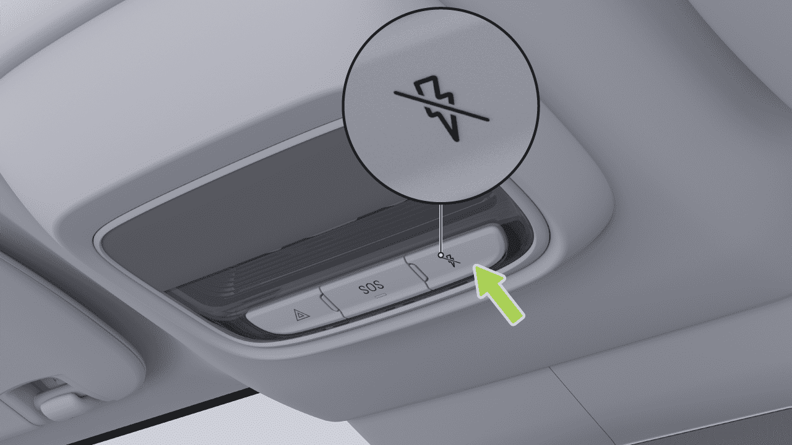
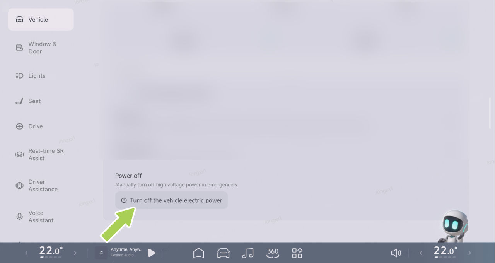
Entrada y salida
apagar la fuente de alimentación de alto voltaje y apagar el vehículo.
Apagado automático
Pise el pedal del freno para encender
En el CID, vaya a la interfaz “ →General→Seguridad y Privacidad”, y podrá activar o desactivar la función “Apagado automático”. Aparecerá una ventana emergente en la pantalla de control central que mostrará un mensaje con una cuenta regresiva de 10 minutos hasta el apagado automático. En ese momento, puede tocar “Cancelar” para reiniciar la cuenta regresiva de 1 hora.
Cuando el vehículo esté apagado, si la tarjeta llave de comunicación de campo cercano, la llave de control remoto o la llave del teléfono está dentro del vehículo, pise el pedal del freno para encender el vehículo.
Sin apagado durante paradas temporales
Cuando la función “Apagado automático” del CID está desactivada y el vehículo está en estado encendido, la palanca de cambios está en la posición P. Abra la APP móvil, vaya a la interfaz “XPENG” y toque “Parada temporal”. En la ventana emergente de aviso, toque “Confirmar”. El vehículo se bloqueará y la pantalla táctil y el A/C permanecerán disponibles.
Después de activar la función “Apagado automático”, el vehículo se apagará automáticamente cuando se cumplan al mismo tiempo las siguientes condiciones.
• No hay nadie sentado en el vehículo.
• Todas las puertas (incluido el maletero) y el capó delantero están cerrados.
• El vehículo está en estado estacionado.
Si la función “apagado automático” está activada en el CID y se cumplen las condiciones para la ejecución del apagado automático, el vehículo se apaga automáticamente después de una hora.
Consejos
• No se realiza ninguna operación en el plazo de 1 hora.
Consejos
Además, el vehículo se encenderá/apagará automáticamente cuando se cumplan ciertas condiciones.

Entrada y salida
• Encendido para actualización del sistema.
• Encendido solicitado por la función de conducción.
Funcionamiento
Introducción
Recordatorio de ocupación del asiento trasero
La función de recordatorio de ocupación del asiento trasero ofrece un servicio que detecta el estado de los asientos traseros, los cinturones de seguridad y otros indicadores para proporcionar un recordatorio sobre objetos olvidados en la fila trasera.
precaución
En la CID, andá a “ →General→Seguridad y Privacidad”, y podés activar o desactivar la función “Recordatorio de Pasajeros en los Asientos Traseros”. Una vez activada la función, si se detecta alguna señal de actividad en los asientos traseros, se le recordará al conductor que revise el asiento trasero al bajar del vehículo.
No se puede garantizar que esta función sea completamente precisa; observá con atención la parte trasera del vehículo al bajar y nunca dejes solos en el vehículo a niños, personas que necesiten asistencia o mascotas.

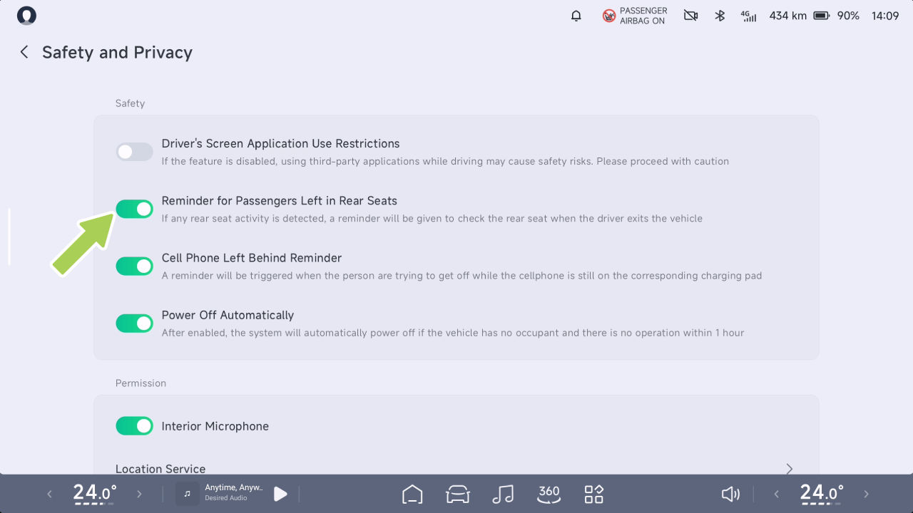